Trzy warianty z motywem mostu: pośrednik jako most między klientem a bankiem. Każdy pokazuję na jasnym i ciemnym tle, jako sam znak w małych rozmiarach, na wizytówce, na pierwszym ekranie strony i jako ikonę w karcie przeglądarki. Kolory i krój napisu zostają z Pana obecnej marki.
Niżej proponowany tekst „Dlaczego most?” na stronę oraz wcześniejsze kierunki A, B i C dla porównania.
Klient i bank to dwa brzegi. Dwie połowy łuku wychodzą z przeciwnych stron i spotykają się w jednym punkcie nad jezdnią: tam, gdzie pracuje pośrednik.
Granatowa połowa to klient, niebieska to bank. Przy okazji znak układa się w literę A, jak Artur. Najprostszy z trzech, dobrze widoczny nawet w karcie przeglądarki.
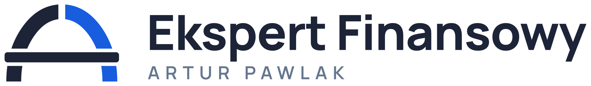
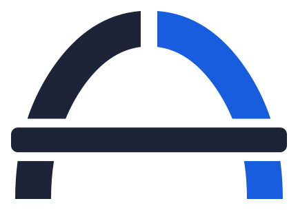
ekspertfinansowy.infoPorównuję oferty banków za Ciebie i jestem przy podpisaniu umowy.
Bezpłatna konsultacjaKlasyczny most łukowy: niebieski łuk niesie granatową jezdnię na trzech wieszakach. Sylwetka, którą każdy od razu rozpozna jako most.
Łuk to konstrukcja, która przenosi ciężar z jednego brzegu na drugi, czyli dokładnie to, co robi Pan w procesie kredytowym: bierze na siebie formalności i prowadzi klienta do banku.
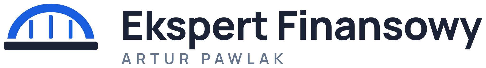
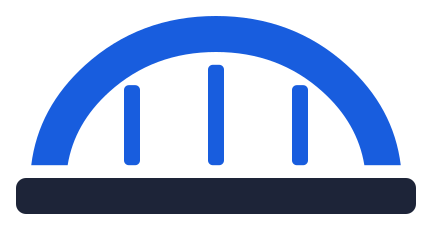
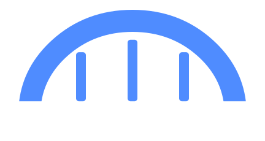
ekspertfinansowy.infoPorównuję oferty banków za Ciebie i jestem przy podpisaniu umowy.
Bezpłatna konsultacjaDwa pylony to klient i bank, lina rozpięta między nimi trzyma całe przęsło. Lina jest w kolorze akcentu, bo to ona jest tu najważniejsza: pośrednik, który łączy obie strony.
Najbardziej „inżynierski” z trzech kierunków, pewny i stabilny w charakterze.
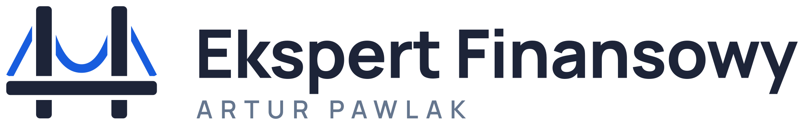
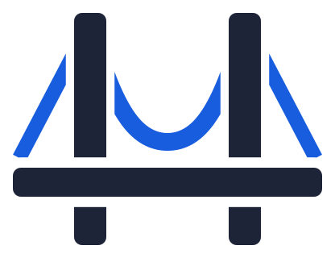
ekspertfinansowy.infoPorównuję oferty banków za Ciebie i jestem przy podpisaniu umowy.
Bezpłatna konsultacjaPośrednik kredytowy łączy dwie strony: klienta, który potrzebuje finansowania, i bank, który go udziela. Moja praca polega na tym, żeby to przejście było bezpieczne i proste: porównuję oferty, przygotowuję dokumenty i jestem przy podpisaniu umowy. Dlatego w moim logo jest most.
Proponowany akapit na stronę, do zakładki O mnie, obok nowego logo. Pasuje do każdego z trzech wariantów, mogę go dowolnie zmienić.
Zostawiam dla porównania.
Rozwinięcie obecnego logo. Dziś postać wychodzi z ramy, tutaj ten sam pomysł zamknięty w prostym znaku: punkt wychodzi poza ramkę.
Rama to bankowy schemat i oferty „z szablonu”, punkt to doradca, który szuka rozwiązania poza nim i stoi po stronie klienta. Kolory zostają te, które klienci już znają z Pana strony: mocny niebieski i granat.
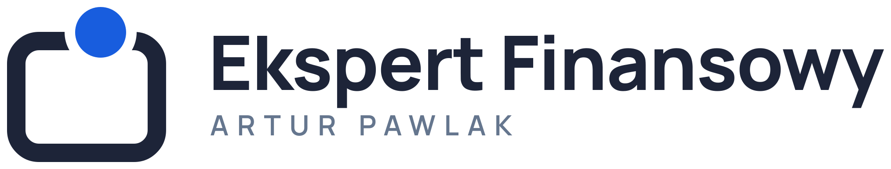
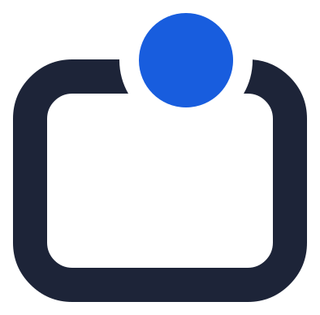
Porównuję oferty banków za Ciebie i jestem przy podpisaniu umowy.
Bezpłatna konsultacjaLitera E zbudowana z trzech belek, jak trzy porównywane oferty. Środkowa, zielona belka jest odsunięta i najdłuższa: to oferta, którą po analizie wskazuje Pan klientowi.
Trzy linie napisu stoją na wysokości trzech belek, więc znak i nazwa tworzą jeden układ. Geometryczna forma jest bardzo czytelna nawet w najmniejszych rozmiarach, np. w karcie przeglądarki.
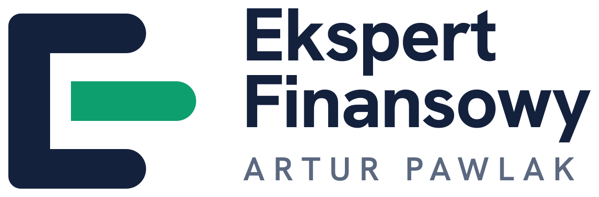
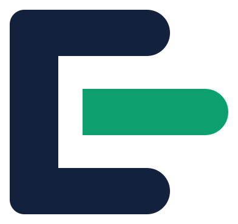
ekspertfinansowy.infoPorównuję oferty banków za Ciebie i jestem przy podpisaniu umowy.
Bezpłatna konsultacjaMarka osobista: na pierwszym planie Pana imię i nazwisko. Znak to monogram AP w okręgu, jak pieczęć, z kreską podpisu pod literami.
Nawiązuje do tego, co Pana wyróżnia: jest Pan przy podpisaniu umowy i firmuje swoją pracę nazwiskiem. Granat, stonowane złoto i szeryfowy krój dają spokojny, prestiżowy charakter.
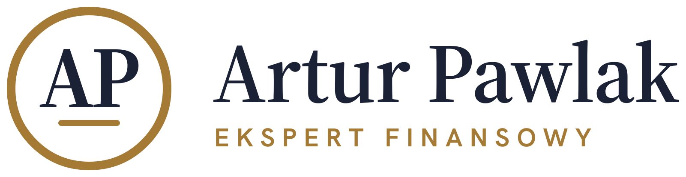
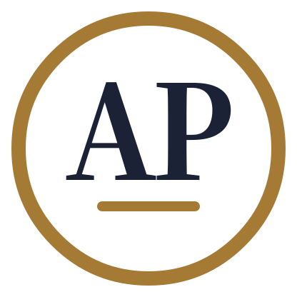
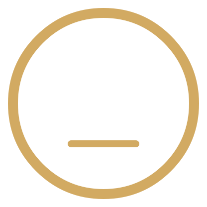
ekspertfinansowy.infoPorównuję oferty banków za Ciebie i jestem przy podpisaniu umowy.
Bezpłatna konsultacja